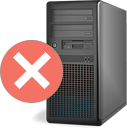

| 任务名称 | 任务状态 | 检查时间 | 操作 |
| 国家局EQIM系统检查 | 未检查 | 无时间记录 | 刷新 设置 |
| 料续波形文件检查 | 已检查 | 2015-07-07 10:30:15 | 刷新 设置 |
| 料续波形文件检查 | 已检查 | 2015-07-07 10:30:15 | 刷新 设置 |
| 料续波形文件检查 | 已检查 | 2015-07-07 10:30:15 | 刷新 设置 |
| 料续波形文件检查 | 已检查 | 2015-07-07 10:30:15 | 刷新 设置 |
| 料续波形文件检查 | 已检查 | 2015-07-07 10:30:15 | 刷新 设置 |
| 故障开始时间 | 2015-07-08 22:17 | 故障结束时间 | 2015-07-08 22:17 | |||
| 台站名称 | ********* | 台站代码 | ********* | 测点代码 | ********* | |
| 仪器名称 | ********* | 仪器型号 | ********* | 所属学科 | ********* | |
| 仪器名称 | ********* | |||||
| 保修时间 | ********* | 送修时间 | ********* | 维修人员 | ********* | |
| 维修内容 | ********* | 维修结果 | ********* | |||
|  | |||
| 服务器 A | 服务器 B | 服务器 C | 服务器 D |